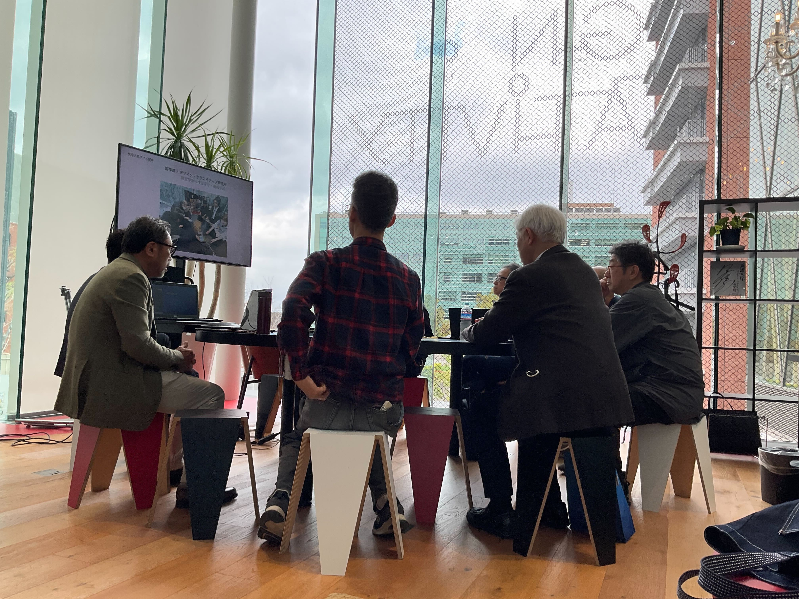
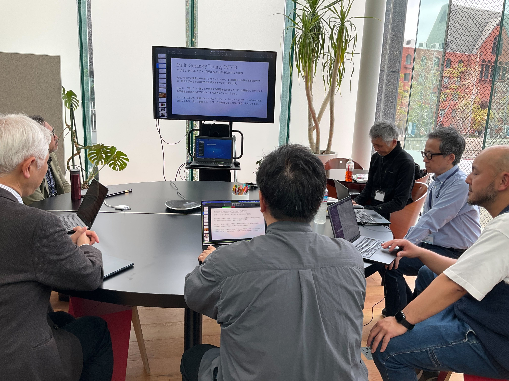
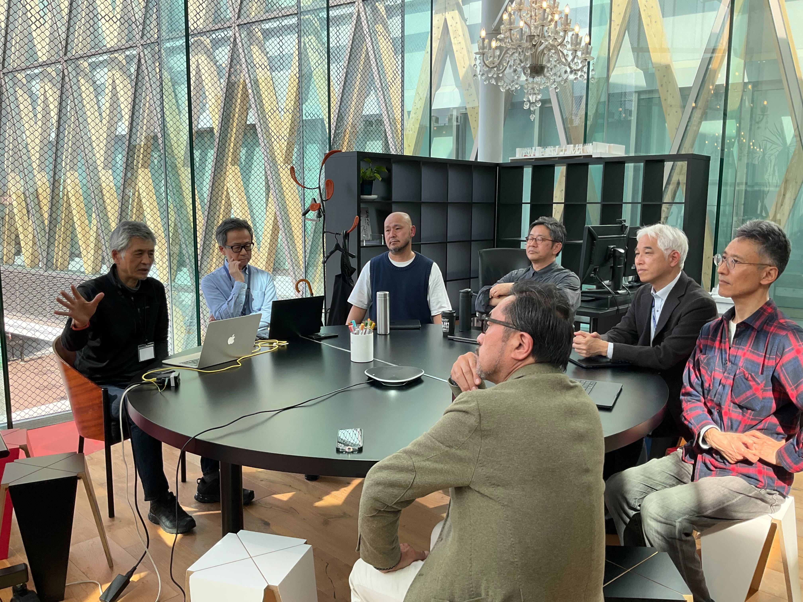

デザイン・クリエイティブ研究所 令和7年度活動報告会
プロジェクトの成果と課題について
近畿大学
2026.03.31



当研究所発足時から活動している以下3つのプロジェクトについて、 それぞれプロジェクトを統括している教員より活動報告を実施（2026/3/31）しました。
・近大病院小児病棟プロジェクト（岡本
清文 近畿大学名誉教授、元文芸学部教授、当研究所顧問）
・Multi-Sensory Dining（後藤
哲也 文芸学部教授）
・2025年第3回プロト・フェス（廣田
章光 近畿大学名誉教授、元経営学部教授、当研究所顧問）